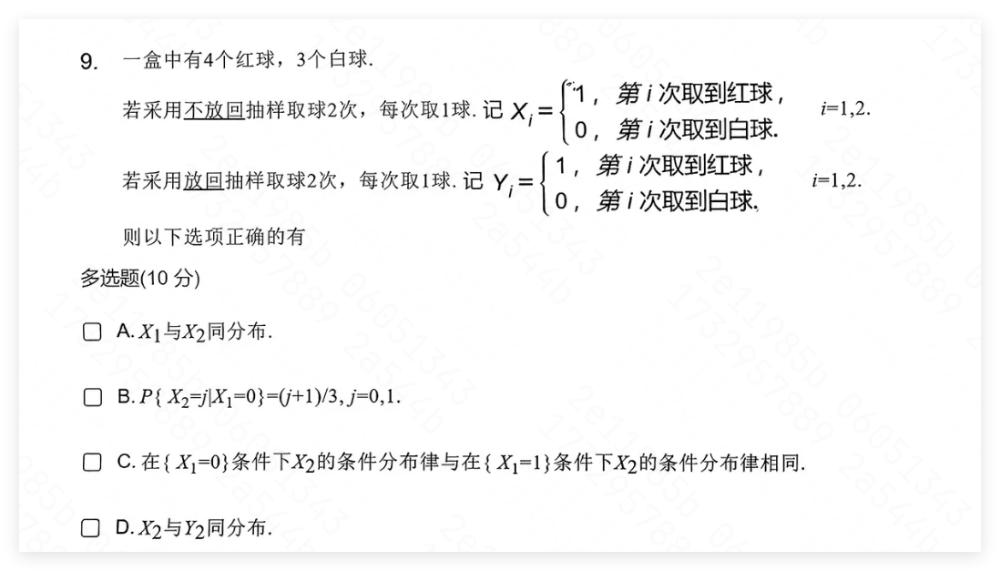

错题本
Chapter 1. 概率论基本概率
多画图求解
在区间 \((0,1)\) 内随机取两个数，则两数之和小于 \(1/2\) 的概率是:
解答：
\[\text{作图，总面积为} 1\times 1,\text{z=x+y 划分正方体为}\frac{1}{2}\times \frac{1}{2} \times \frac{1}{2}=\frac{1}{8}\]
独立性
题面： 已知 \(0\lt P(A)P(B)\lt 1\) ，则以下条件成立时 \(A,B\) 一定独立：
\[ P(\bar{A}|B)= P(\bar{A}|\bar{B}) \]
解答：
将 \(P(\bar{B}) = 1-P(B)\) 带入可得到 \(P(\bar{A}B) =P(\bar{A})P(B)\)
题面： 设随机事件 \(A,C\) 相互独立，\(B,C\) 相互独立，则 \(A\cup B\) 与 \(C\) 相互独立的充分必要条件是：
- A. \(P(AB)=P(A)P(B)\)
- B. \(P(A\cup B)= P(A) +P(B)\)
- C. \(AB, C\) 相互独立
- D. \(AB,C\) 互不相容
解答：
选C，不过我还没搞懂。
右连续边界的概率
题面： $$ F(x)=\begin{cases}0, & x\lt 1 \ \frac{x}{4}, & 1\le x\lt 2 \ 1, & x\le 2 \end{cases} $$
求 \(P(X=2)\)
解答：
因为是右连续，所以：
\[ P(X=2)=F(x)-F(x-0)|_{x=2}= \frac{1}{2} \]
Chapter 2. 随机变量及其分布
注意标准正态分布的对应关系
题面： \(F(x)=0.5\Phi(x) +0.5 \Phi\left(\frac{x-4}{2}\right)\) ，求 \(E(x)\)
解答： 设 \(t=\frac{x-4}{2}\) ，则对于 \(\Phi\left(\frac{x-4}{2}\right)\) ，\(x=2t+4 \sim N(4,4)\)，所以 \(E(X) =0.5\times 0+ 0.5\times 4 =2\)。
Chapter 3. 多维随机变量及其分布
离散型和连续型的联合分布可以用全概率公式
题面： \(X\sim N(0,1), Y\)的取值是\(\pm 1\)，且\(P\{Y=1\}=p\)，若 \(X,Y\) 相互独立，求证 \(Z=X\cdot Y \sim N(0,1)\)
解答：
\[\begin{array}c F_Z(t) = P(XY\le t)=P(Y=1)P(X\le t)+P(Y=-1)P(X\ge -t)\\ =P(Y=1)F_X(t) +P(Y=-1) (1-F_X(-t)) \\ =pF_X(t) +(1-p) F_X(t) = F_X(t) \end{array} \]
题面： (数一考研2020) 设随机变量 \(X_1, X_2, X_3\) 相互独立，其中 \(X_1, X_2\) 均服从标准正态分布，\(X_3\) 服从 \(P\{X_3 =0\}=P\{ X_3=1\} = \frac{1}{2}\)，令 \(Y=X_3 X_1 +(1-X_3) X_2\) ，求：
- <1> 二维随机变量 \((X_1, Y)\) 的分布函数
- <2> 证明随机变量 \(Y\) 服从标准正态分布
解答：
\[\begin{array}l F(x,y)& =P\{X_1 \le x, Y\le y\} \\ &= P\{X_3=0\} P\{X_1 \le x, X_2\le y\} +P\{X_3 =1\} P\{X_1 \le x, X_1\le y\} \\ & = \frac{1}{2}\Phi(x)\Phi(y) + \frac{1}{2}\Phi(\min (x,y)) \\ F(y) & = \lim_{x\to +\infty} F(x,y) =\frac{1}{2}\Phi(y) +\frac{1}{2} \Phi(y) = \Phi(y) \end{array} \]
虽然看起来明显相关，但是也可能是同分布

答案选 ABD 。
虽然 \(X_1, X_2\) 一眼不独立，但是实际计算后能发现二者分布相同（同时与 \(Y_i\) 同分布）
两个独立变量比大小，用联合密度函数
题面： 设随机变量 \(X,Y\) 相互独立，且分布服从参数分别为 1,4 的指数分布，求 \(P\{X\lt Y\}\)
解答：
\[\begin{array}c f(x,y) =f_X(x) f_y(y) =\begin{cases}4e^{-x-4y}, & x\gt 0,y\gt0 \\ 0, & \text{其他}\end{cases} \\ P\{X\lt Y\} =\iint_{x\lt y} f(x,y) dxdy =\frac{1}{5} \end{array}\]
和常数取最小值的联合密度函数？？？
题面： 设随机变量 \(X\) 服从参数为 \(\lambda =1\) 的指数分布，\(Y=\min (X,2)\)，求 \(E(Y)\)
解答：
\[ F_Y(y) =P(\min (X,2)\le y) = 1-P( \min(X,2)\gt y) = 1-P(X\gt 2)P(y\lt 2) =\begin{cases}F_X(y), & y\lt 2\\ 1, & y\ge 2 \end{cases} \]
然后求导根据密度函数积分得到结果。不过这题实际上只用求 \(E(Y)\)，因此直接代入求解：
\[ E(Y)=\int_{-\infty}^{+\infty} \min (x,2) f(x)dx= \int_0^2 xe^{-x}dx +\int_2 ^{+\infty} 2e^{-x}dx = e^{-2}+1 \]
Chapter 4. 随机变量的数字特征
\(e^{- x^2}\) 积分
题面： 随机变量密度函数为 \(f(x)=\begin{cases}2x^3 e^{- x^2}, & 0\le x \\ 0, & \text{else}\end{cases}\) ，求 \(D( \frac{1}{X})\)。
解答： 这题思路很明显，但是实际求积分的时候可能会迷糊。
\[\begin{array}c E( \frac{1}{X})=\int_0^{+\infty} 2x^2 e^{- x^2}dx = -xe^{- x^2}|_0 ^{+\infty} + \int_0^{+\infty} e^{-x ^2} dx = \frac{\sqrt{\pi}}{2} \\ E\left( \frac{1}{X^2}\right)= \int_0^{+\infty} 2x e^{- x^2}dx = 1 \\ \Rightarrow D( \frac{1}{X})= E\left( \frac{1}{X}^2\right) -E\left(\frac{1}{X}\right)^2 =1- \frac{\pi}{4} \end{array} \]
熟悉特殊积分(也可以从标准正态函数来看待)
\[\int_{-\infty}^{+\infty} \frac{1}{\sqrt{2\pi}}e^{-\frac{x^2}{2}}=1 \Rightarrow \int_{0}^{+\infty} e^{-x ^2}=\frac{\sqrt{\pi}}{2}\]
对于有放回，从单个事件推广到整体
题面：
有 n 张各不相同的卡片,采用有放回抽样,每次取一张,共取 n 次,则有些卡片会被取到,甚至被取到很多次,但有些卡片可能不曾被取到.设这 n 张卡片中被取到的共有 X 张,计算 \(E(X)\),并计算当 \(n \rightarrow +\infty\) 时，\(E(X/n)\)的极限：
解答：
定义指示变量 \(I_i\)，表示第 \(i\) 张卡片是否被抽到过：
\[ I_i = \begin{cases} 1 & \text{第 \( i \) 张卡片被取到至少一次} \\ 0 & \text{否则} \end{cases} \]
则被抽到的卡片总数 \(X\) 可以表示为这些指示变量的和：
\[ X = \sum_{i=1}^n I_i \]
现在计算 \(E(X)\)，即 \(E\left( \sum_{i=1}^n I_i \right)\)。根据期望的线性性，我们有：
\[ E(X) = \sum_{i=1}^n E(I_i) \]
要计算 \(E(I_i)\)，我们先考虑第 \(i\) 张卡片在 \(n\) 次抽取中都没有被抽到的概率。每次抽到该卡片的概率为 \(\frac{1}{n}\)，因此第 \(i\) 张卡片在某次抽取中不被取到的概率为 \(1 - \frac{1}{n}\) 。因此，第 \(i\) 张卡片在 \(n\) 次抽取中从未被取到的概率为：
\[ P(I_i = 0) = \left(1 - \frac{1}{n}\right)^n \]
于是，第 \(i\) 张卡片至少被抽到一次的概率为：
\[ P(I_i = 1) = 1 - \left(1 - \frac{1}{n}\right)^n \]
所以，
\[ E(I_i) = P(I_i = 1) = 1 - \left(1 - \frac{1}{n}\right)^n \]
代入回 \(E(X)\) 的表达式：
\[ E(X) = \sum_{i=1}^n \left(1 - \left(1 - \frac{1}{n}\right)^n\right) = n \left(1 - \left(1 - \frac{1}{n}\right)^n\right) \]
则 \(E(X/n)\) 的极限：
\[ \lim_{n \to +\infty} \frac{E(X)}{n} = \lim_{n \to +\infty} \left(1 - e^{-1}\right) = 1 - e^{-1} \]
因此，当 \(n \to +\infty\) 时，\(E(X/n)\) 的极限为：
\[ \lim_{n \to +\infty} E(X/n) = 1 - e^{-1} \approx 0.632 \]
求分布函数的均值？其实和求变量函数均值没区别
题面： 设随机变量 \(X\sim E( \frac{1}{2})\) ，求 \(E(F(X)^2+X)\)
解答：
\[ E=\int_{-\infty}^{+\infty} (F(x)^2+x) f(x)dx = \frac{7}{3} \]
准确把握协方差的性质哦
独立重复抛硬币，\(X\) 表示前两次正面的次数，\(Y\) 表示前四次正面的次数，求 \(Cov(X,Y)\)
此题可以另设随机变量 \(X'\) 为后两次正面的次数，则 \(Y=X+X'\)，且 \(X'\) 与 \(X\) 独立：
\[ Cov(X,Y)= Cov(X,X+X')= Cov(X,X)= Var(X)=\frac{1}{2} \]
熟悉二元正态分布各个参数含义
题面： (数一考研2022) 设随机变量 \(X\sim N(0,1)\)，在 \(X=x\) 条件下，\(Y\sim N(x,1)\)，求 \(X,Y\) 相关系数。
解答： 思路是先求联合分布，再带入二元正态分布模板求出参数 \(\rho\)
\[\begin{array}c f_X(x) =\frac{1}{\sqrt{2\pi}} e^{- \frac{x^2}{2}}, f_{Y|X}(y|x)=\frac{1}{\sqrt{2\pi}} e^{-\frac{(y-x) ^2}{2}} , \\ \Rightarrow f(x,y)=f_X(x) f_{Y|X}(y|x)= \frac{1}{2\pi} e^{-\frac{1}{2}(2x ^2 -2xy+ y^2)} \\ \text{而二维正态密度函数为 }(X,Y)\sim f(x,y)\sim N(\mu_1 ,\mu_2; \sigma_1^2, \sigma_2^2; \rho) \\ f_1(x,y) = \frac{1}{2\pi \sigma_1 \sigma_2\sqrt{1-\rho ^2}} e^{-\frac{1}{2(1-\rho ^2)}\left[\frac{(x-\mu_1) ^2}{\sigma_1 ^2} - \frac{2\rho(x-\mu_1) (y-\mu_2)}{ \sigma_1 \sigma_2}+ \frac{(y-\mu_2) ^2}{\sigma_2 ^2}\right]} \\ \text{对比可得：} -\frac{1}{2(1-\rho^2)} \frac{(x-\mu_1)^2}{ \sigma_1^2} = - \frac{1}{2} \cdot 2x^2 \\ \text{其中} \mu_1 =0, \sigma_1^2 =1\ \Rightarrow \ \rho = \frac{\sqrt{2}}{2} \end{array}\]
\(N(\mu_1 ,\mu_2; \sigma_1^2, \sigma_2^2; \rho)\)
分别是两个变量的均值、方差和相关系数
求两个相关正态差值的平方的均值？？？
题面： 二元正态总体 \((X,Y)\sim N(0,0; \sigma^2, 4\sigma^2; -0.5)\) ，从中抽取 n 个简单样本 \((X_i, Y_i)\) ，求 \(\frac{1}{n} \sum_{i=1}^n (X_i -Y_i) ^2\) 依概率收敛到？
解答： 不能把平方拆成 \(X_i^2 -2 X_i Y_i + Y_i^2\) 来分别求均值，因为 \(E(X_i Y_i)\) 应该不能求
\[ \frac{1}{n} \sum_{i=1}^n (X_i -Y_i) ^2 =E[ (X- Y)^2] =D(X - Y) + E(X -Y)^2 = D(X) +D(Y) - 2Cov(X, Y)= \text{略} \]
Chapter 5. 大数定律和中心极限定理
随机变量乘积的方差
题面：
设随机变量 \(X_i\) 的密度函数为：
\[ f_i(X)=\begin{cases} \frac{i|x|^{i-1}}{2}, & |x|\le 1 \\ 0, & \text{其他} \end{cases} ,\ \ \ i=1,2,3,...,n \]
且 \(X_1, X_2, ...,X_n\) 相互独立。令 \(Y_n = \prod_{i=1}^n X_i\) ，用切比雪夫不等式求使得 \(P\{|Y_n| \ge \frac{1}{2}\} \le \frac{1}{9}\) 成立的最小 \(n\) 。
解答：
对于任意 \(i\) ，由于 \(xf_i(x)\) 为奇函数，所以 \(E(X_i)=0\) ，同时有 \(E(Y_n) =0\)。
当 \(X_i, X_j\) 相互独立时，有引理：
\[ Var(X_i\cdot X_j)=Var(X_i)Var (X_j) +Var(X_i) E(X_j)^2 +Var(X_j) E(X_i)^2 \]
由于本题中 \(E(X_i) =E(X_j) =0\)
所以有：
\[ Var(X_i\cdot X_j) =Var(X_i)\cdot Var(X_j) \]
又：
\[ \begin{array}l Var(X_i) & =\int _{-1}^1 (x-0)^2f(x)dx \\ & = \int_{-1}^1 x^2 \frac{i|x|^{i-1}}{2}dx \\ & = \int _0^1 ix^{i+1}dx \\ & = \frac{i}{i+2} \end{array}\]
所以：
\[ Var(Y_n)= \prod_{i=1}^n X_i = \frac{1}{1+2} \cdot \frac{2}{2+2} \cdot \frac{3}{3+2}... \frac{n}{n+2} = \frac{2}{(n+1)(n+2)} \]
带入切比雪夫不等式：
\[ P\left(|Y_n| \ge \frac{1}{2}\right) \le \frac{2\cdot 2^2}{(n+1)(n+2)} \le \frac{1}{9} \]
得 \(n\) 最小值为 7。
问有多少把握，肯定是转换成正态看
问题：
随机变量 \(X\) 满足三角分布：
\[ f(x)=\begin{cases}x, & 0\le x \lt 1 \\ 2-x, & 1\le x\ \lt 2 \\ 0, & \text{其他} \end{cases} \]
要保证至少有 \(95\%\) 把握使事件 \(\{\frac{1}{2} \lt X \lt \frac{3}{2}\}\) 出现次数不少于 80 ，则需要至少多少次观察？
解答：
\[\begin{array}c q=P\left(\frac{1}{2} \lt X\lt \frac{3}{2}\right)=\frac{3}{4} \\ \text{随机变量Y为n次试验中满足条件的次数} \\ \text{则 } E(Y)=nq, D(Y)=nq(1-q) \\ Y\sim N(nq, nq(1-q)) \\ 95\% \le P(Y\ge 80) =1- \Phi\left(\frac{80-nq}{\sqrt{nq(1-q)}}\right)\\ \text{解得} n=117 \end{array}\]
Chapter 6. 数理统计的基本概念
非线性的样本函数的数学期望和方差利用独立同分布求
题目：
\[ f(x) = \begin{cases}\lambda e^{-\lambda x}, & x\gt 0 \\ 0, & x\le 0 \end{cases} \]
从总体中抽取样本容量为 10 的样本。
（1）求样本均值的数学期望和方差。
（2）记 \(X_{(1)}=\min (X_1, X_2,..., X_{10})\)，求 \(X_{(1)}\) 的数学期望和方差。
解答
（1）直接利用 \(E(\bar{X}) = E(X), \ \ D(\bar{X}) = \frac{1}{n}D(X)\) 求即可：
\[ E(\bar{X}) = E(X) = \frac{1}{\lambda} , D(\bar{X})=\frac{1}{10\lambda^2} \]
（2）利用 min 函数的性质求 \(F_{min}(X) = 1- (1- F(X))^{10}\)：
\[\begin{array}l F(x)= \begin{cases}0, & x\le 0 \\ 1- \lambda e^{-\lambda x}, & x\gt 0 \end{cases} \\ F_{min}(x) = \begin{cases}0 , & x\le 0 \\ 1-\lambda e^{-10\lambda x} , & x\gt 0\end{cases} \\ f_{min}(x) = \begin{cases}0, & x\le 0 \\ 10\lambda e^{-10\lambda x}, & x\gt 0 \end{cases}\\ \begin{cases}E(X_{(1)}) = \frac{1}{10\lambda} \\ Var(X_{(1)}) = \frac{1}{100\lambda^2}\end{cases} \end{array}\]
百变X方分布
题面： 对于总体 \(N(\mu, 1)\) ，下列不是 \(\chi^2\) 分布的是：
- A. \(\sum_{i=1}^n (X_i -\mu)^2\) True \(X_i\) 之间独立同分布，按定义求即可
- B. \(2(X_n -X_1)^2\) False 参数错误，应为 \(\frac{1}{2}(X_n -X_1)^2\)
- C. \(\sum_{i=1}^n( X_i -\bar{X})^2\) True 相当于 \((n-1)S^2\)，由于总体方差为 1，所以服从 \(\chi^2( n-1)\)
- D. \(n(\bar{X} -\mu)\) True 按定义求即可
Chapter 7. 参数估计
求无偏估计量平均，可以先求出分布函数，再计算均值
题面： 总体 \(N(\mu, \sigma^2)\) ，\(k\sum_{i=1}^n |X_i -\bar{X}|\) 是参数 \(\sigma\) 的无偏估计量，求 \(k\) 的大小
解答： 要点在于，估计量也是正态分布，则先求出它的方差再代入正态公式
\[\begin{array}c 令 Y_i =X_i -\bar{X} = -\frac{X_1}{n} -\frac{X_n}{n} -...+ \frac{(n-1)X_i}{n} - ... - -\frac{X_n}{n} \\ \Rightarrow E(Y_i)= 0, \ D(Y_i) = \left[\frac{1}{n^2}\times \left(n-1\right) + \frac{(n-1)^2}{ n^2}\right]\sigma ^2 = \frac{n-1}{n}\sigma ^2 \\ \Rightarrow f_{ Y_i} (y)=\frac{1}{\sqrt{2\pi \frac{n-1}{n}}\sigma } e^{-\frac{y ^2}{ 2(\frac{n-1}{n}\sigma ^2)}} \\ \text{计算可得} E(|Y_i|) =\int_{-\infty} ^{+\infty} |y|f(y)dy = \sigma \sqrt{\frac{2(n-1)}{n\pi}} \\ \Rightarrow k\sigma \sqrt{\frac{2(n-1)}{n\pi}} = \sigma \\ \Rightarrow k= \sqrt{\frac{n\pi}{2(n-1)}} \end{array}\]
多个独立指数分布的最小值仍然服从指数分布
题面： 设总体服从参数为 \(\theta\) 的指数分布，\(X_1, X_2, X_3\) 为来自总体的简单随机样本，若 \(\bar{\theta} = k\min_{1\le i\le 3} (X_i)\) 为 \(\theta\) 的无偏估计量，求 \(k\)
解答：
\[\begin{array}c F(M)= P(min \lt M)= 1- P(min \ge M) = 1- F(x\ge M)^3= 1-3 e^{-3\theta M} \\ \Rightarrow E(M)= \frac{1}{3\theta} \\ \Rightarrow k=3 \end{array}\]
平方后不一定还是无偏估计
题面： 总体 \(B(1, p)\) ，取 n 个样本，易证明 \(\hat{p}_M = \bar{X}\) 是参数 \(p\) 的无偏估计，那么验证 \((\hat{p}_M^2)\) 是否是 \(p^2\) 的无偏估计
解答： 别搞混 \(E(X^2) ,E(X)^2\) 就好了，要注意差别
\[\begin{array}c E(\hat{p}_M^2) =E(\bar{X}^2) = \frac{1}{n} \left[\sum E(X_i ^2) + 2 \sum_{1\le i\lt j \le n} E(X_i X_j) \right] \\ E(X_i ^2) = D(X_i) +E(X_i)^2 =p(1-p) +p^2 =p , E(X_i X_j) =E(X_i) E(X_j) =p^2 \\ \Rightarrow E(\hat{p}_M^2) = \frac{1}{n^2}( np + n(n-1)p^2) \ne p^2 \\ \text{所以不是无偏估计} \end{array}\]
二项分布只给出样本均值也能求极大似然估计
题面： 设总体 \(X\sim B(4, p)\)，从总体中抽取容量为 8 的一组简单随机样本，记样本均值 \(\bar{X}\) ，则分别求：
- <1> \(P(X=1)\) 的极大似然估计
- <2> 用 \(\bar{X} / 4\) 估计 \(p\) 时，其均方误差
解答： \(P(X=1)\) 的估计，可以先求参数 \(p\) 的似然估计，在用 \(P(X=k) =C_n^k p^k (1-p)^{n-k}\) 代入
\[\begin{array}c L(p)= \prod_{i=1}^8 P(X= X_i) = \prod_{i=1}^8 C_4^{ X_i} \times p^{\sum_{i=1} ^8 X_i} \times (1-p)^{ \sum_{i=1}^8 (4- X_i)} \\ \frac{d\ln L(p)}{dp} = \frac{\sum X_i}{ p} - \frac{32- \sum X_i}{1-p} = 0 \\ \Rightarrow \hat{p} = \frac{1}{32}\sum X_i = \frac{1}{4}\bar{X} \\ \Rightarrow P(X=1)= 4p(1- p)^3 = \frac{\bar{X}( 4-\bar{X})^3}{64} \end{array}\]
对于均方误差，由于 \(E(\bar{X} / 4) =4p / 4 =p\) ，即这是一个无偏估计量，则均方误差 \(Mse =Var\) ，即 \(Mse(\bar{X} / 4) = Var(\bar{X} / 4) = \frac{1}{16} \frac{4p(1-p)}{8}\)
Chapter 9. 假设检验
{kind=link}